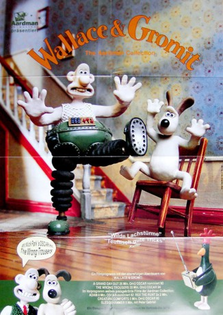

#1882 Wallace & Gromit - Die Techno-Hose
Alternativ: The Wrong Trousers
Auszeichnungen: 1 Oscars gewonnen 1 BAFTA-Awards gewonnen
 
 IMDB-Wertung: 8.4 / 10
IMDB-Wertung: 8.4 / 10  Metascore: 0
Metascore: 0 
Gromit hat Geburtstag, und Wallace verblüfft ihn mit einer ganz besonderen Erfindung, einer selbstlaufenden Hose. Die zweite Geburtstagsüberraschung ist nicht weniger kurios: ein neuer Untermieter - ein merkwürdiger Pinguin, an den Gromit nicht nur sein Zimmer, sondern auch die Gunst von Wallace verliert. Doch der Eindringling entpuppt sich als gesuchter Verbrecher, der die "Techno-Hose" mitsamt dem schlafenden Wallace zu einem Diamanten-Raubzug benutzt. Eine wilde Verfolgungsjagd mit einem verrückten Showdown auf einer Spielzeugeisenbahn beginnt...
Jahr: 1993
Dauer: 30 Minuten
FSK:
Land: England Studio: BBCTonspuren:
Untertitel:
Auflösung: 1080p (1440x1080) Größe: 1320 MB
Genre: Animation/Trick, Kurzfilm, Komödie, Krimi, Familie
Regisseur:  Nick Park
Nick Park
Drehbuch: Nick Park, Bob Baker, Brian Sibley, Nick Park
Soundtrack: Julian Nott
Darsteller:
Datei: X:\Kinder Collections\Wallace & Gromit\Wallace & Gromit - Die Techno-Hose (1993, FSK, 1440x1080).mkv seit 31.08.2015
Festplatte: Kinder-Filme+Trick
 Es gibt insgesamt 10 Filme in der Gruppe 'Kinder Collections\Wallace & Gromit'
Es gibt insgesamt 10 Filme in der Gruppe 'Kinder Collections\Wallace & Gromit'